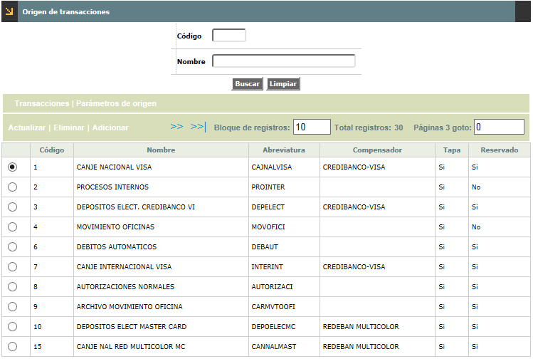

Origen de transacciones |
Esta función habilita la consulta y/o mantenimiento, reservado a funcionarios de Open Card S.A., de la tabla que almacena los códigos de los diferentes orígenes o fuentes de las transacciones, determinando para cada uno de estos las transacciones correspondientes o propias de cada origen, y para cada una de ellas, entre otros parámetros, datos de plazo, multa y costo respectivo, así como las validaciones a las cuales deben someterse. Además, provee la opción de relacionar las causales de devolución que usualmente se asocian a algunas transacciones que entran en proceso de intercambio y dado el caso de llegarse a la instancia de manejar las transacciones en proceso de Comprobantes de buena fe o contracargos se permite parametrizar por rol (adquirente o emisor) acorde al origen, el destino del movimiento.

El formulario cuenta con un filtro mediante el cual el usuario puede hacer consultas selectivas bien sea por el código del origen o por el nombre del mismo.

El formulario contiene las opciones Actualizar, Eliminar y Adicionar.
Adicionar: Si el usuario invoca la opción Adicionar se despliega un nuevo formulario
Descripción de campos
Código |
Campo numérico de 3 dígitos, obligatorio, en el cual se registra el código asignado a cada uno de los orígenes de transacciones definidos por la entidad, tanto externos (franquicias, compensadores), como locales, internacionales, internos, etc. |
Nombre |
En este campo alfanumérico de 30 caracteres, obligatorio, se registra la descripción o definición asociada a cada código de origen de transacciones. |
Abreviatura |
Campo alfanumérico de 10 caracteres, obligatorio, en el que se ingresa la abreviatura o nombre corto utilizado que identifica al origen y que se utiliza para reportes impresos o consultas. |
Compensador |
Este campo tipo combo permite seleccionar el compensadores a través del cual se va a procesar el movimiento que ingresa por el origen. |
Tapa |
Campo obligatorio que contiene un combo donde se selecciona entre Si o No el origen requiere que una vez se efectúe el cambio de calendario se habilite para el siguiente día hábil, lo que aplica principalmente para aquellos orígenes basados en cargues o integración de movimiento. |
Reservado |
En este campo tipo combo se selecciona entre Si o No el código y origen han sido reservados para uso exclusivo de OpenCard, o corresponden a Convenios. Para tal fin, existen unos rangos seleccionados previamente, por lo cual si la entidad requiere definir uno o más orígenes puede hacerlo utilizando un código diferente al del rango reservado, siempre y cuando se tenga presente que ello implica desarrollos adicionales o en el mejor de los casos, adecuación de los programas existentes. |
Actualizar: Si el usuario selecciona un registro e invoca la opción Actualizar se despliega un formulario en el cual los campos modificables son el Nombre, Abreviatura, Compensador, Tapa y Reservado.
El formulario Orígen de transacciones contiene los hipervínculos Transacciones y Parámetros de origen que le permiten al usuario seleccionar el registro correspondiente a un origen en particular e invocar los formularios desde los cuales se puedeb parametrizar las transacciones originales válidas y algunos parámetros propios para el origen seleccionado.